<!DOCTYPE html>
<html lang="en">
  <head>
    <meta charset="utf-8" />
    <meta name="viewport" content="width=device-width, initial-scale=1.0, maximum-scale=1.0, user-scalable=no" />

    <title></title>
    <link rel="stylesheet" href="dist/reveal.css" />
    <link rel="stylesheet" href="dist/theme/night.css" id="theme" />
    <link rel="stylesheet" href="plugin/highlight/zenburn.css" />
	<link rel="stylesheet" href="css/layout.css" />
	<link rel="stylesheet" href="plugin/customcontrols/style.css">
	<link rel="stylesheet" href="plugin/chalkboard/style.css">


    <script defer src="dist/fontawesome/all.min.js"></script>

	<script type="text/javascript">
		var forgetPop = true;
		function onPopState(event) {
			if(forgetPop){
				forgetPop = false;
			} else {
				parent.postMessage(event.target.location.href, "app://obsidian.md");
			}
        }
		window.onpopstate = onPopState;
		window.onmessage = event => {
			if(event.data == "reload"){
				window.document.location.reload();
			}
			forgetPop = true;
		}

		function fitElements(){
			const itemsToFit = document.getElementsByClassName('fitText');
			for (const item in itemsToFit) {
				if (Object.hasOwnProperty.call(itemsToFit, item)) {
					var element = itemsToFit[item];
					fitElement(element,1, 1000);
					element.classList.remove('fitText');
				}
			}
		}

		function fitElement(element, start, end){

			let size = (end + start) / 2;
			element.style.fontSize = `${size}px`;

			if(Math.abs(start - end) < 1){
				while(element.scrollHeight > element.offsetHeight){
					size--;
					element.style.fontSize = `${size}px`;
				}
				return;
			}

			if(element.scrollHeight > element.offsetHeight){
				fitElement(element, start, size);
			} else {
				fitElement(element, size, end);
			}		
		}


		document.onreadystatechange = () => {
			fitElements();
			if (document.readyState === 'complete') {
				if (window.location.href.indexOf("?export") != -1){
					parent.postMessage(event.target.location.href, "app://obsidian.md");
				}
				if (window.location.href.indexOf("print-pdf") != -1){
					let stateCheck = setInterval(() => {
						clearInterval(stateCheck);
						window.print();
					}, 250);
				}
			}
	};


        </script>
  </head>
  <body>
    <div class="reveal">
      <div class="slides"><section  data-markdown><script type="text/template"></script></section><section  data-markdown><script type="text/template"># Berlin Water Map

## BHT Berlin

Generative Gestaltung

**Sommersemester 2022**
</script></section><section  data-markdown><script type="text/template">GG - Berlin Water Map

# Die Karte
</script></section><section  data-markdown><script type="text/template">## Berliner Gewässer
<p style="line-height: 0" class="reset-paragraph image-paragraph">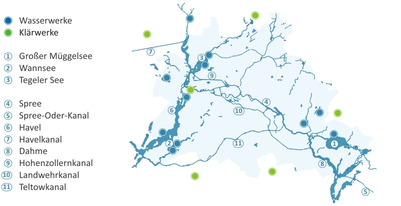</img></p>

</script></section><section  data-markdown><script type="text/template">
### Müggelsee und Umgebung
<p style="line-height: 0" class="reset-paragraph image-paragraph">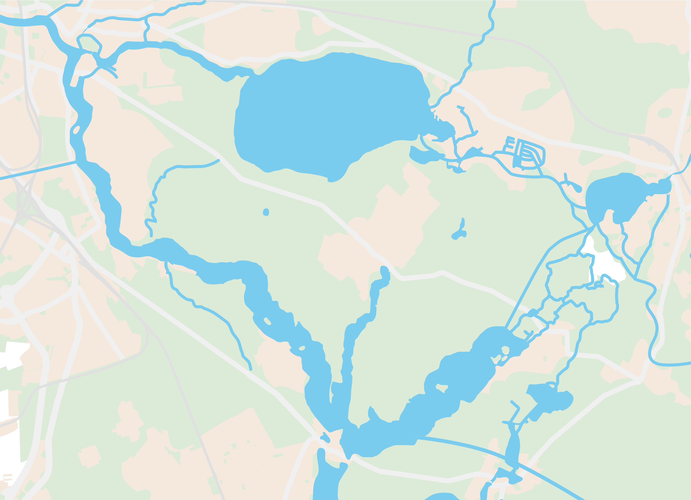</img></p>

Karte im SVG Format
</script></section><section  data-markdown><script type="text/template"># Begrenzung und Wasser Definition
</script></section><section  data-markdown><script type="text/template">
<p style="line-height: 0" class="reset-paragraph image-paragraph">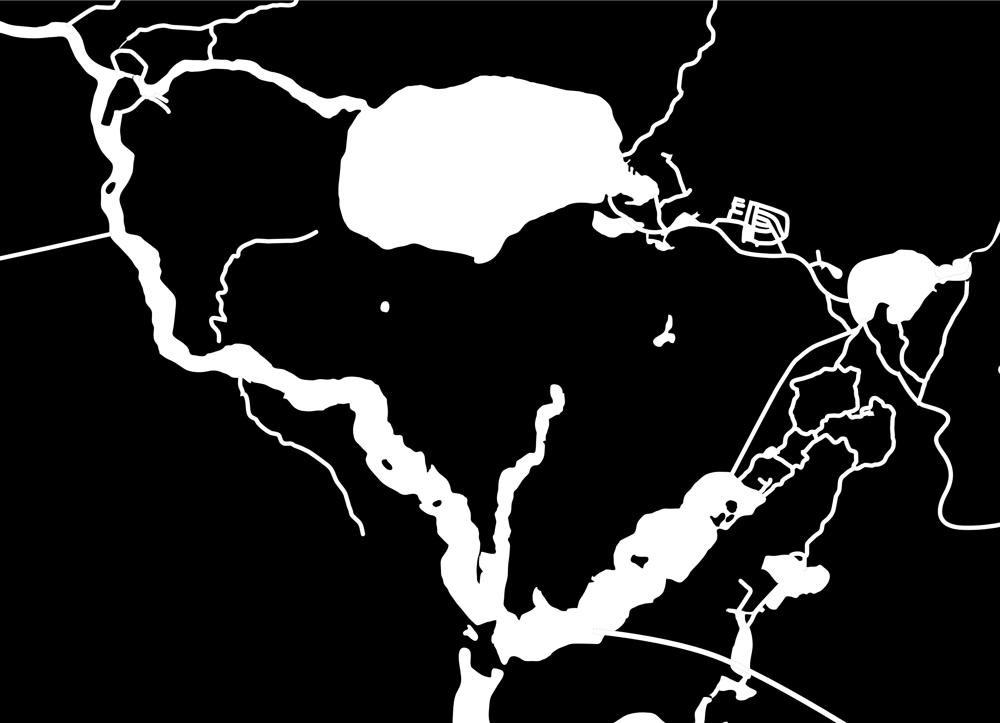</img></p>

</script></section><section  data-markdown><script type="text/template">
<p style="line-height: 0" class="reset-paragraph image-paragraph">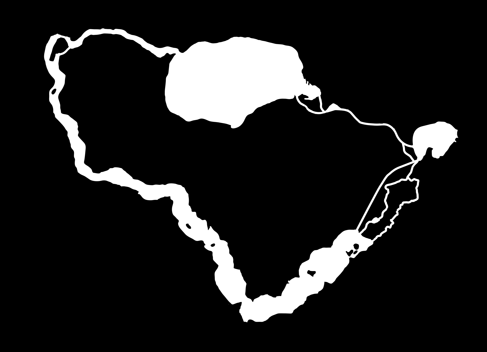</img></p>

</script></section><section  data-markdown><script type="text/template">### Zeichnen und Definieren des Flussfeldes

Inspiriert von Normal Mapping
</script></section><section  data-markdown><script type="text/template"><p style="line-height: 0" class="reset-paragraph image-paragraph">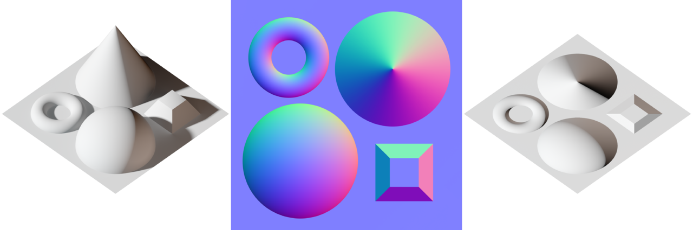</img></p>

Example of a normal map (center) with the scene it was calculated from (left) and the result when applied to a flat surface (right). 
</script></section><section  data-markdown><script type="text/template">Normal Mapping
```
  X: -1 to +1 :  Red:     0 to 255
  Y: -1 to +1 :  Green:   0 to 255
  Z:  0 to -1 :  Blue:  128 to 255
```

```
            light green    light yellow
  dark cyan       light blue     light red    
  dark blue       dark magenta

```
</script></section><section  data-markdown><script type="text/template">### Flux of water determined by normal map
```javascript
function getDirectionForce(x, y) {
// get the index of the current pixel in p5.Image
let index = (x + y * width) * 4;
// get the vector of the current pixel
let r = normalMap.pixels[index]; // red channel of the pixel
let g = normalMap.pixels[index + 1]; // green channel of the pixel

let force_x = map(r, 0, 255, -1, 1);
let force_y = map(g, 0, 255, -1, 1);

if (force_x < 0.005 && force_x > -0.005 && force_y < 0.005 && force_y > -0.005) 
{ force_x = 0
force_y = 0; }
return createVector(force_x, force_y);
}
```
</script></section><section  data-markdown><script type="text/template">### Automatische Berechnung der "Edges" Vektoren

- Mithilfen von Python und den Libs
	- cv2, numpy und matplotlib

- Kantenerkennung im S/W Bild mittels **Sobel** Operator -> **einfacher Kantendetektions-Filter**
</script></section><section  data-markdown><script type="text/template">### Sobel Operator

<p style="line-height: 0" class="reset-paragraph image-paragraph">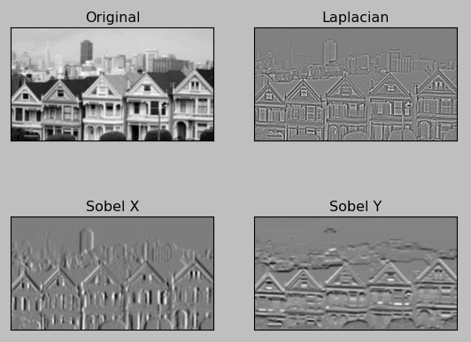</img></p>

</script></section><section  data-markdown><script type="text/template">### Generierung X/Y Sobel
```python
sobelx = cv2.Sobel(imb,cv2.CV_64F,1,0,ksize=5)

sobely = cv2.Sobel(imb,cv2.CV_64F,0,1,ksize=5) # y

max_value = max(sobelx.flatten())
min_value = min(sobelx.flatten())


sobelx = ((sobelx + abs(x_min_value)) * 255 // (x_max_value*2)).astype(np.uint8)
sobely = ((sobely + abs(y_min_value)) * 255 // (y_max_value*2)).astype(np.uint8)
```
</script></section><section  data-markdown><script type="text/template">### Output
<p style="line-height: 0" class="reset-paragraph image-paragraph">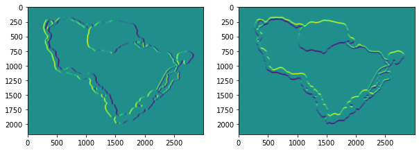</img></p>

</script></section><section  data-markdown><script type="text/template">### Combine the Pictures
```python
# combine channels to rgb picture
normalmap = np.dstack((np.zeros_like(sobelx)+255, sobely, sobelx))
# also generated blurred version
normalmap_blur = cv2.blur(normalmap, (50, 50))
```
</script></section><section  data-markdown><script type="text/template">
### Ergebnis Edges "Normal Map"

<p style="line-height: 0" class="reset-paragraph image-paragraph">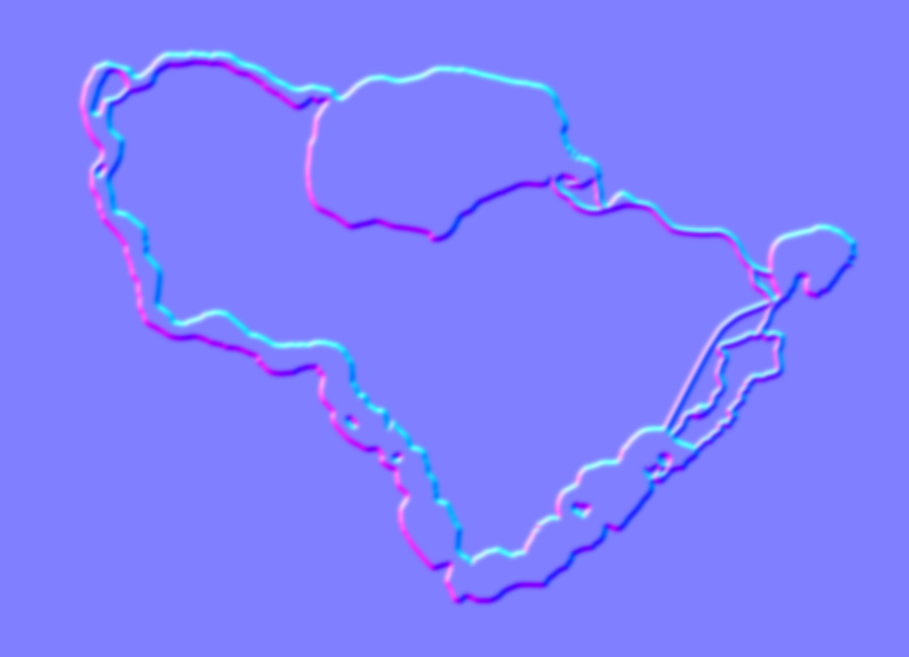</img></p>

</script></section><section  data-markdown><script type="text/template">
### Zeichnen von Strömung in der normal map

- händisch
- mit Programm?
</script></section><section  data-markdown><script type="text/template">### Erstellen eines "Normal Map Brush" 

- Mit Affinity Photo
- (Sollte in Photoshop o.Ä. genauso gehen)
</script></section><section  data-markdown><script type="text/template">### Der normal Map Brush

<p style="line-height: 0" class="reset-paragraph image-paragraph">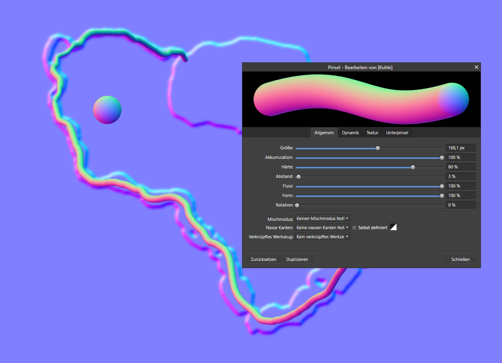</img></p>


- Es kann nun gezeichnet werden :)
</script></section><section  data-markdown><script type="text/template">### Normal Map mit Flussrichtung

<p style="line-height: 0" class="reset-paragraph image-paragraph">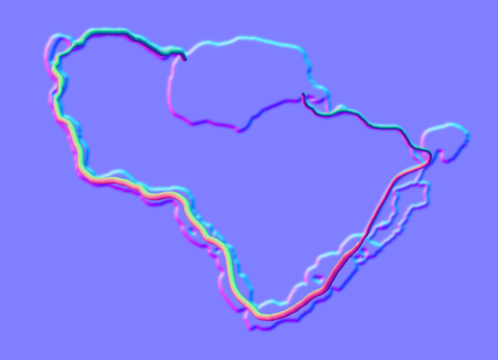</img></p>

</script></section><section  data-markdown><script type="text/template">### Seen mit Perlin Noise
- Seen sind "neutrales" Gebiet in der Normal Map
- Daher hier -> Perlin Noise auf die Schiffe
- S/W Maske für Perlin Noise
</script></section><section  data-markdown><script type="text/template">### Perlin Noise
Maske
<p style="line-height: 0" class="reset-paragraph image-paragraph">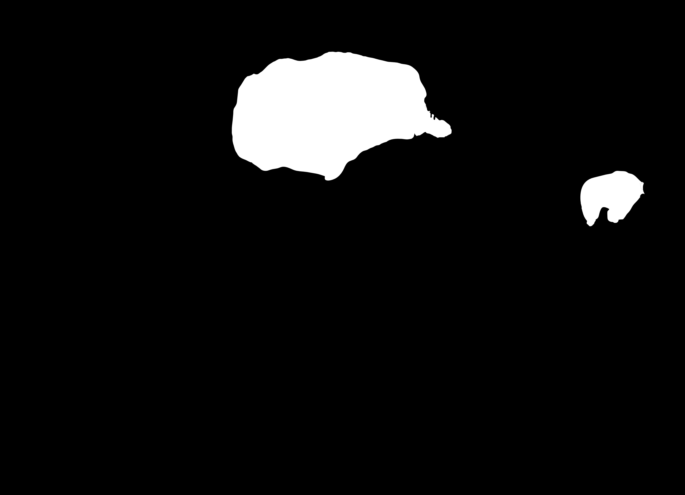</img></p>

</script></section><section  data-markdown><script type="text/template">
# Vielen Dank!
</script></section></div>
    </div>

    <script src="dist/reveal.js"></script>

    <script src="plugin/markdown/markdown.js"></script>
    <script src="plugin/highlight/highlight.js"></script>
    <script src="plugin/zoom/zoom.js"></script>
    <script src="plugin/notes/notes.js"></script>
    <script src="plugin/math/math.js"></script>
	<script src="plugin/mermaid/mermaid.js"></script>
	<script src="plugin/chart/chart.min.js"></script>
	<script src="plugin/chart/plugin.js"></script>
	<script src="plugin/menu/menu.js"></script>
	<script src="plugin/customcontrols/plugin.js"></script>
	<script src="plugin/chalkboard/plugin.js"></script>

    <script>
      function extend() {
        var target = {};
        for (var i = 0; i < arguments.length; i++) {
          var source = arguments[i];
          for (var key in source) {
            if (source.hasOwnProperty(key)) {
              target[key] = source[key];
            }
          }
        }
        return target;
      }

	  function isLight(color) {
		let hex = color.replace('#', '');

		// convert #fff => #ffffff
		if(hex.length == 3){
			hex = `${hex[0]}${hex[0]}${hex[1]}${hex[1]}${hex[2]}${hex[2]}`;
		}

		const c_r = parseInt(hex.substr(0, 2), 16);
		const c_g = parseInt(hex.substr(2, 2), 16);
		const c_b = parseInt(hex.substr(4, 2), 16);
		const brightness = ((c_r * 299) + (c_g * 587) + (c_b * 114)) / 1000;
		return brightness > 155;
	}

	var bgColor = getComputedStyle(document.documentElement).getPropertyValue('--r-background-color').trim();

	if(isLight(bgColor)){
		document.body.classList.add('has-light-background');
	} else {
		document.body.classList.add('has-dark-background');
	}

      // default options to init reveal.js
      var defaultOptions = {
        controls: true,
        progress: true,
        history: true,
        center: true,
        transition: 'default', // none/fade/slide/convex/concave/zoom
        plugins: [
          RevealMarkdown,
          RevealHighlight,
          RevealZoom,
          RevealNotes,
          RevealMath.MathJax3,
		  RevealMermaid,
		  RevealChart,
		  RevealCustomControls,
		  RevealMenu,
		  RevealChalkboard, 
        ],

		mathjax3: {
			mathjax: 'plugin/math/mathjax/tex-mml-chtml.js',
		},

		customcontrols: {
			controls: [
				{id: 'toggle-overview',
				title: 'Toggle overview (O)',
				icon: '<i class="fa fa-th"></i>',
				action: 'Reveal.toggleOverview();'
				},
				{ icon: '<i class="fa fa-pen-square"></i>',
				title: 'Toggle chalkboard (B)',
				action: 'RevealChalkboard.toggleChalkboard();'
				},
				{ icon: '<i class="fa fa-pen"></i>',
				title: 'Toggle notes canvas (C)',
				action: 'RevealChalkboard.toggleNotesCanvas();'
				},
			]
		},
		menu: {
			loadIcons: false
		}
      };

      // options from URL query string
      var queryOptions = Reveal().getQueryHash() || {};

      var options = extend(defaultOptions, {"width":960,"height":700,"margin":0.04,"controls":true,"progress":true,"slideNumber":false,"transition":"slide","transitionSpeed":"default"}, queryOptions);
    </script>

    <script>
      Reveal.initialize(options);
    </script>
  </body>
</html>
